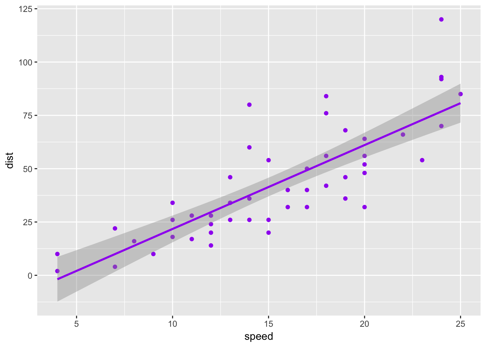

Download the Rmd notebook for this example
The R for Reproducible Scientific Analysis pages at software carpentry have a really nice interface for hiding and showing solutions to exercises. I’ve created my own lightweight solution that you can use in any html file, including those made by RMarkdown (e.g., R notebooks).
Graph the relationship between speed and distance for the cars dataset.
You can put some text inside the solution, as well as code cunks.
library(tidyverse)
ggplot(cars, aes(speed, dist)) +
geom_point(color = "purple") +
geom_smooth(method = "lm", color = "purple")
Setting this up requires a few lines at the beginning and end of each file, plus surrounding your solutions with a line of html.
<style>
/* styles for hidden solutions */
.solution { height: 2em; overflow-y: hidden; }
.solution.open { height: auto; }
.solution button { height: 1.5em; margin-bottom: 0.5em; }
</style>If you’re using RMarkdown Websites, you can just put these lines of css into an external stylesheet linked in your _site.yml file.
<script>
window.onload = function(){
var buttons = document.getElementsByTagName("button");
for (var i = 0; i < buttons.length; i++) {
buttons[i].onclick = function() {
var cl = this.parentElement.classList;
if (cl.contains('open')) {
cl.remove("open");
} else {
cl.add("open");
}
}
}
}
</script>If you’re using RMarkdown Websites, you can just put this script into an external footer or script file linked in your _site.yml file.